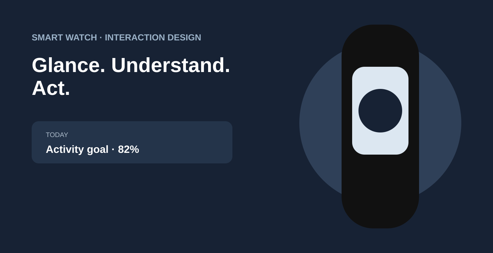

Original visuals from my Behance portfolio. The gallery above preserves the full set of images available from this Behance project.
A small screen demands bigger decisions about what not to show.
Wearables are personal, contextual and attention-constrained. Treating a watch as a smaller phone creates unnecessary navigation and forces users to spend more time looking at the device than the moment requires.
The opportunity was to design around the short interaction: recognize the situation, surface the relevant information, support a quick decision and let the user return to the world.
My role: translate user context into interface priorities
I used personas and journey thinking to identify high-value moments and then translated those moments into a compact interaction model. The focus was not on fitting every feature onto a watch, but on defining which information and actions genuinely deserve a glance.
Strategy: design for the moment, not the device
Personas frame intent. Journey mapping identifies moments of need. Interaction concepts turn those moments into concise states. This sequence helps the team decide what belongs in the watch experience and what should remain on a larger surface.
Use familiar visual hierarchy and context to make the state immediately understandable.
Keep the primary action prominent and remove unnecessary navigation.
Make completion and recovery explicit so users can finish quickly and confidently.
Interface strategy
Large targets, recognizable states, compact hierarchy and fast recovery support interaction at a glance. Progressive disclosure keeps secondary information available without competing with the immediate task.
Leadership impact
This case demonstrates how I turn research framing into product decisions: define the user's context, identify the moments that matter, establish a hierarchy and give the team a clear system for deciding what belongs—and what does not.